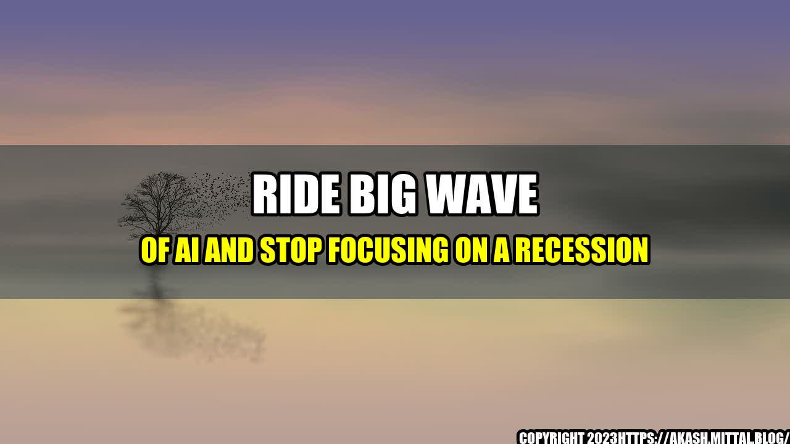

Ride Big Wave of AI and Stop Focusing on a Recession
The Story of Tom and Karen
Tom and Karen have been running a small manufacturing business for the past ten years. They've always prided themselves on their ability to adapt and change with the times. When the recession hit in 2008, they made tough decisions and cut costs wherever they could in order to survive.
Now, in 2021, they find themselves in a strong position. Their business is thriving, and they've even managed to expand their operations. However, they can't shake the feeling that another recession might be just around the corner. They're nervous about investing in new technology or hiring more staff, in case the economy takes a turn for the worse.
It's a common fear among business owners, but it's one that can be detrimental to growth and innovation. In order to truly thrive in today's economy, it's important to focus on the opportunities presented by new technologies, rather than constantly worrying about the possibility of a downturn.
AI's Potential
Artificial intelligence (AI) is one of the most promising new technologies that businesses can take advantage of. Here are just a few examples of how AI is transforming industries:
- Agriculture: AI can help farmers increase crop yields by analyzing data on weather patterns, soil conditions, and plant health in real time.
- Healthcare: AI can improve patient outcomes by analyzing medical data and helping doctors make more accurate diagnoses.
- Retail: AI can personalize the shopping experience for individual customers, improving customer satisfaction and increasing sales.
- Manufacturing: AI can improve efficiency by identifying patterns in data and automating repetitive tasks.
Why Focusing on a Recession is a Mistake
The reality is that there's always a risk of a recession. It's impossible to predict exactly when it will happen, or how severe it will be. Instead of worrying about a hypothetical event, businesses should focus on what they can control: their own growth and innovation.
Investing in new technology, hiring talented employees, and expanding operations are all important steps to take in order to stay competitive in today's economy. By focusing on AI and other emerging technologies, businesses can position themselves for long-term success, regardless of short-term economic fluctuations.
Conclusion
In conclusion, business owners like Tom and Karen should look to the opportunities presented by emerging technologies like AI, rather than constantly worrying about the possibility of a recession. By making strategic investments in technology and talent, businesses can position themselves for long-term success, even in the face of economic instability.
To sum up, here are three key points to keep in mind:
- AI is one of the most promising new technologies that businesses can take advantage of.
- Worrying about a recession is a mistake. Instead, businesses should focus on innovation and growth.
- Investing in new technology, hiring talented employees, and expanding operations are important steps to take to stay competitive in today's economy.
Curated by Team Akash.Mittal.Blog
Share on Twitter Share on LinkedIn